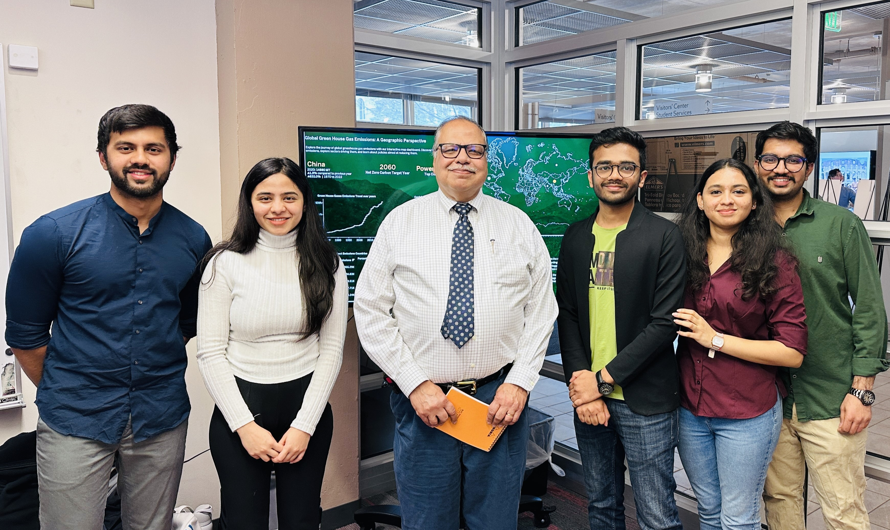
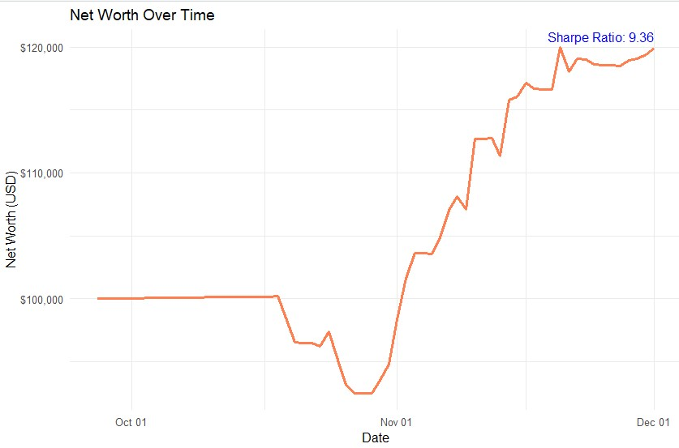
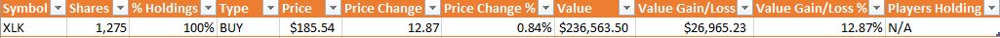

Dashboard on Green Prosperity: Is Sustainable Energy the Key to National Growth?
Course : IST 737 Visual Analytics Dashboard (Spring 2024)
Instructor : Prof. Raj Dewan
Achievement
I developed a strong ability to tell compelling stories through data, culminating in receiving a perfect A for the course.
Project Goals
The Green Prosperity initiative presents a comprehensive exploration of the global transition toward sustainable energy and its impact on national growth. Through a series of interconnected dashboards, this project delves into the intricate dynamics of renewable energy adoption, investment trends, and the economic ramifications of embracing green technologies. Each dashboard provides unique insights, ranging from global greenhouse gas emissions to renewable energy investment trends, culminating in a holistic understanding of the interplay between environmental sustainability and economic prosperity.
Actionable Insight:
Key Insights Influencing My Strategy
Actionable Insight:
My Contribution
Portfolio Performance
Overall Trend: The performance of my portfolio followed a positive trajectory, with a steady increase in value from September 27, 2023, to December 1, 2023. This indicates strong and profitable performance for my chosen ETFs, particularly in the technology sector (XLK).
Key Observations
My Portfolio & Strategy
-
XLK Holdings:
• 1,275 shares (100% of my portfolio), valued at $236,563.50, with a 12.87% gain in value. XLK performed exceptionally well, which supported my decision to concentrate most of my funds in this ETF.
My analysis originally recommended purchasing 1,208 shares, but due to financial constraints, I was able to buy 1,148 shares. As profits grew between October 30th and November 10th, I bought an additional 82 shares, ultimately surpassing my initial goal by purchasing a total of 1,275 shares. -
Riskier Strategy:
• Inspired by an article by Ricardo Fernandez, I deviated from the model's recommendation of diversification and opted to concentrate investments in XLK. I recognized the risks involved, especially related to beta (volatility), but I was confident in the sector’s short-term growth potential. This move paid off, but I acknowledge that future results could vary depending on market conditions.
Learning Outcomes Demonstrated
-
Understanding of ETFs (Exchange-Traded Funds):
• ETFs are marketable securities that track a basket of assets like an index or sector. They are traded like stocks and offer diversification within a single security. This project enhanced my understanding of how ETFs operate, how to analyze their performance, and how they compare to individual stocks in terms of risk and return. -
Single Index Model and Information Ratio:
• I applied the Single Index Model to evaluate ETFs based on their risk and return relative to a market index. The model uses beta (sensitivity to market movements) and alpha (performance relative to the expected return) to suggest optimal investments.
• The Information Ratio (IR) measures a portfolio manager's ability to generate excess returns relative to the risk taken. By using this ratio, I was able to identify ETFs that offered high returns for the level of risk involved. -
Risk Management and Diversification:
• While diversification is a fundamental principle of risk management, I chose a concentrated investment strategy. Although this heightened my risk exposure, I was able to manage it by continuously monitoring XLK’s performance and adjusting my holdings based on market data. -
Sector Analysis and Strategic Investment:
• I learned how to analyze specific sectors (technology, healthcare, finance) and identify those with the strongest growth potential. The technology sector, represented by XLK, outperformed during this period, validating my strategy of concentrating my investments in this area. -
Portfolio Optimization using R:
• R was instrumental in performing time-series analysis, regression, and portfolio optimization. I built models to predict ETF performance, calculate risk metrics, and optimize my portfolio based on historical data.